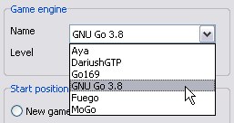

Drago - Game engines
Drago - Game engines
Drago can be interfaced with game engines using the GTP protocol. In practice, there can be some limitations. Here is the list of the engines which can be used without any problem.
- Aya, DariusGTP, Fuego, GNU Go, Go169, MoGo, Pachi
Thanks a lot to Ben Lambrechts for compiling and sharing the GNU Go and Fuego ports for Windows.
All the engines above have their own way to handle functions outside the GTP protocol. This includes:
- timing (time per move, time per game, byo-yomi)
- level
- scoring (Chinese or Japanese)
- undo
- game analysis functions
To cope with all the possibilities, Drago has a configuration file describing what can be done and how with the six game engines listed above. The consequence for the user (you!): there is no need to enter command lines and parameters as Drago already knows how to use each engine.
As an example, when starting an engine game against MoGo, the starting window enables only the features relevant
for it, ie timing per move or per game, and Chinese scoring only:
Click to enlarge
MoGo port for Windows
MoGo team does not support currently a port for Windows (March 2012). However, it is still possible to share the version previously available. Here it is:
Drago proposes a default configuration which should be ok. In case of needs, and thanks to the wayback machine, here is a link to the page with the FAQ and description of the command line arguments.
To check the recent development of MoGo, the home page is here.
Note also that:
- It is possible to declare several engines and select one of them when starting a game:
 - The engine configuration file contains the links to the download location of the predefined engines. When declaring an engine, Drago will open the download location if you ask for it.
- Even if the usual arguments are automatically set, it is still possible to add arguments to tune more precisely the behavior of a game engine.
- The engine configuration file can be edited and it is possible to add more engines.
- If Mogo cannot start under Windows 7, try running mogo.exe directly (i.e. double-click mogo.exe), Windows pops up a dialog asking for permission. This has a checkbox "Always ask before opening this file". Clear it, run Mogo then close it. This has been proposed by Ian at SL and could be useful for other systems (Vista) or engines.